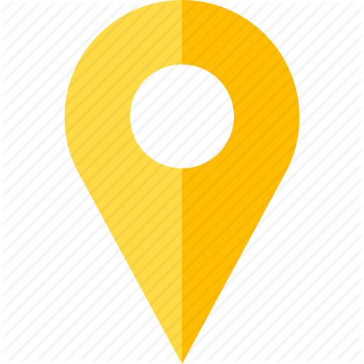

<ion-header no-border>
  <ion-toolbar color="primary">
	<ion-title style="text-align:center">Tracking & Records</ion-title>
  </ion-toolbar>
</ion-header>

<ion-content padding>

	<div class="map-wrapper">
		<!-- <div id="map_center">
			
		</div> -->
		<div #map id="map"></div>
	</div>
	<!-- <div id="address">
		<span>{{address}}</span>
	</div> -->
	<ion-grid>
		<ion-row>
		<ion-col>
			<ion-button (click)="loadMap()">
			<ion-icon slot="start" name="locate"></ion-icon>Center
			</ion-button>
		</ion-col>	
		<ion-col>
			<ion-button>Track</ion-button>
		</ion-col>	
		</ion-row>
	</ion-grid>

	<div class="trip-records">
		<h3>This is your where your trip records go </h3>
	</div>
</ion-content>
